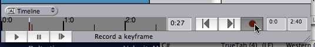
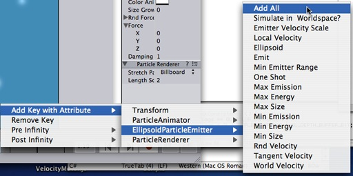
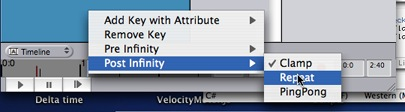
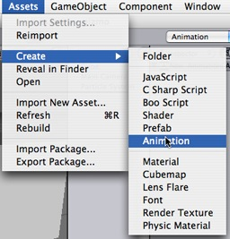

Animations are best imported from art programs but can also be created inside Unity.
To import an animation from your art package you need to export it as the fbx format or maya mb/ma files. When you place your fbx or maya file in unity's project folder it will automatically appear in the project view and you can drag it to the scene. The animation on all objects in the scene is imported automatically and you wil see the animation playing when you hit play.
For character animation it is useful to have multiple animations on the same object. For example a run, walk and jump animation. These animation clips can be played using the Animation.Play script function.
Some art tools support mixing of animations and export multiple animation clips on the same geometry. (Also known as multi-take animations) Unity will import multiple animation clips and attach them to the animation. They can be played with scripts using the name of the clip.
If you have a tool that does not support multi take animations, you can create multiple copies of the file with the same geometry but different animations. The only problem is that all animation clips will have the same name. To fix this you give the different fbx files a special name using the @ sign. For example monster@run.fbx, monster@walk.fbx, monster@jump.fbx. When unity imports those animations it will rename all animations to the name after the @ sign eg. run, walk or jump.
Creating animations inside Unity
1. Switch to the animation layout. This will give you a time line pane. In the time line you will create and modify animations.
 |
2. Select the object you want to animate in the scene view.
3. Click on the record button in the animation time line
|  |
4. Select another time in the timeline by clicking on it. Then move the object some where else and hit record again.
If you hit play now, your object will follow the animation you just created.
Hints
-
By default only the transform's position, rotation and scale is included in the animation.
Right-click on the timeline and use the "Add Key With Attribute" menu to add other animatable properties of the selected object to the animation.
 - You can scrub on the timeline by dragging a keyframe with the center mouse button
- Post Infinity is used to define behaviour of the animation after the last keyframe. Right-click on the timeline and select Post Infinity -> Repeat from the context menu.
 - Sometimes it is useful to create animations which are shared among all objects.
To do this, create an animation clip in the assets menu.
 Then drag the animation clip on an object. Then you animate the object. Then you can drag the animation clip on other objects.